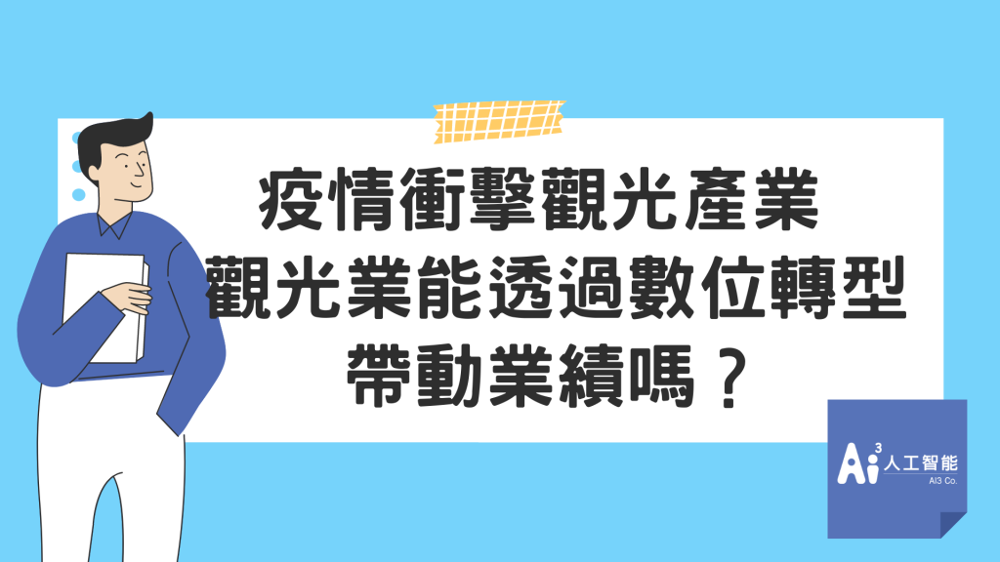
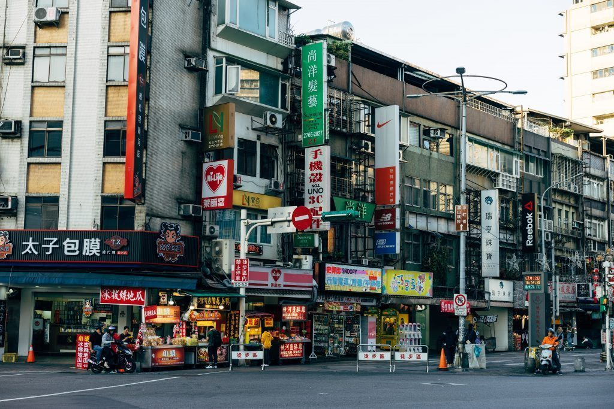
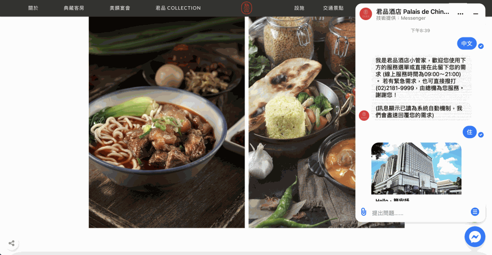
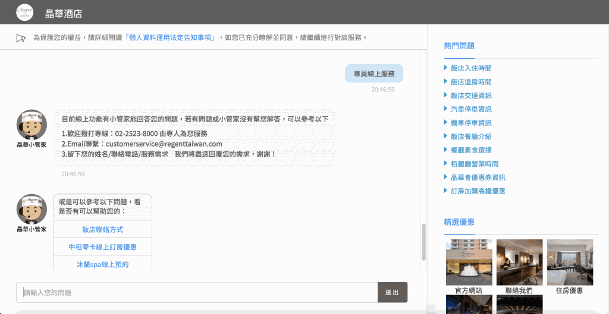

近日台灣疫情再度升溫，許多消費者擔心而紛紛取消訂房，使飯店住房率僅剩一成，沒有人來旅遊也跟著影響附近店家生意，讓觀光業者嘆歷史又再度重演！在去年有許多觀光業者趁疫情間轉型、翻修，那今年的觀光業者在無法與消費者見面，該推出什麼樣的策略呢？
觀光產業面臨疫情影響該怎麼辦？

遊客取消旅遊行程，在收益下滑減少的情況，業者需要更嚴格進行成本控制！除了成本面的問題，也需要思考遊客取消行程後該怎麼提升消費者好感度，讓此次的損失轉為機會。過去有觀光業者推出地方聊天機器人，消費者可以用數位化的方式來了解地方特色，這次消費者無法到此旅遊，業者也可以透過此種數位化的方式結合在地特色，讓消費者在疫情期間與聊天機器人互動，等疫情下降後消費者會更願意回來再訪，獲得品牌忠誠度。
如何透過觀光機器人、飯店機器人來改變現況
疫後新時代，使用聊天機器人與遊客互動，可讓消費者更安心旅遊，好處包括互動過程「不需與員工接觸」、「減少人力成本」、「24小時即時服務」、「免除語言隔閡」，若有個人化的需求可在機器人上轉由真人服務，而這些真人服務可搭配CRM平台將這些數位經濟，詳細的紀錄在後台建立客戶輪廓、進行貼標，未來有合適方案可透過社群媒體推播給曾來訪過的客戶。
聊天機器人導入應用於觀光與飯店產業
聊天機器人針對觀光及飯店業者，提供不同的社群通路支援，讓業者不需要待在電腦前待命，由聊天機器人即可回覆這些重複諮詢的問題，且這些通路可串連飯店訂房以及飯店客服櫃台，有效提高員工效率，減少閒置率。在聊天機器人的內容設定中置入地方景點、美食、伴手禮介紹，幫助地方觀光產業發展，帶動地方經濟永續發展，落實企業社會責任，建立良好企業形象。
君品酒店機器人

君品酒店機器人採用選單式聊天機器人，依照飯店自己設計的服務流程，讓消費者選擇，引導到產品介紹或訂房，優點：回答不會出錯、快速選擇、簡單明瞭;缺點：提供的答案也許並不是客戶真正需要的，轉接專人並不能在同一介面完成。
晶華酒店機器人

晶華酒店機器人使用NLU聊天機器人，能輕鬆了解客戶意圖，但比起選單機器人也需要花更多時間進行數據上的維護，優點：透過聊天方式就查詢到答案、可自訂品牌的吉祥物、形象：缺點：需要維護資料，建置費用貴。
飯店導入聊天機器人確實可以減少大量人力成本，幫助飯店業者省下不少人力費用，但對消費者來說在聊天機器人無法解決問題的時候，聊天機器人僅回覆客服窗口資訊，需要在額外的洽詢窗口，對消費者並沒有便利多少。
而Ai3人工智能提供的智能機器人與智能客服平台，提供完美的人機協作，消費者在詢問機器人時想轉由真人服務，可直接在同個平台操作，而飯店的客服人員可在後台為客戶紀錄、貼標，建立CRM會員資料庫，為下一次服務推廣做好準備。
📍點此觀看🔍聊天機器人懶人包
其他文章